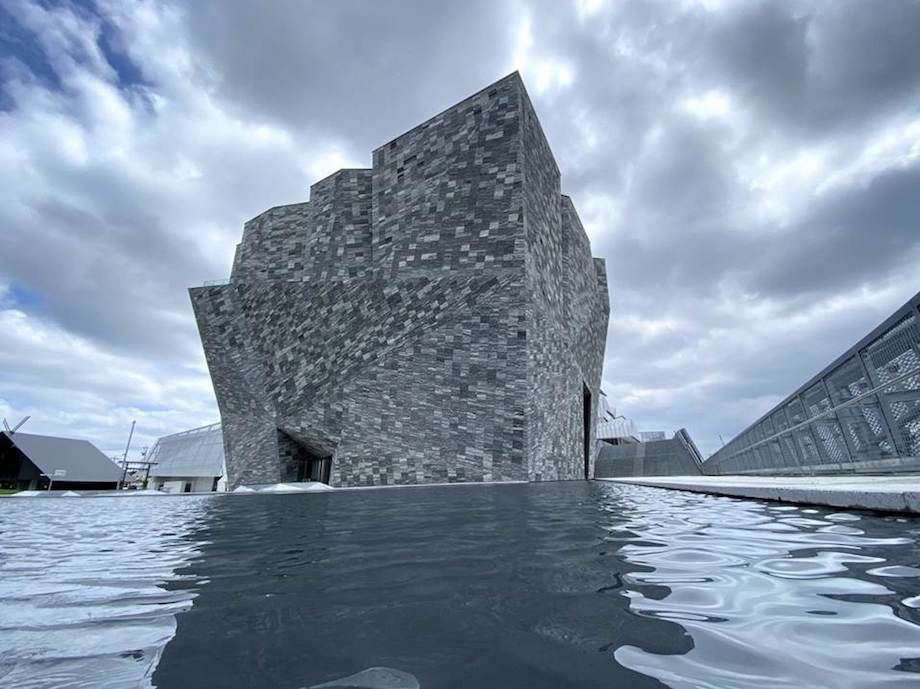
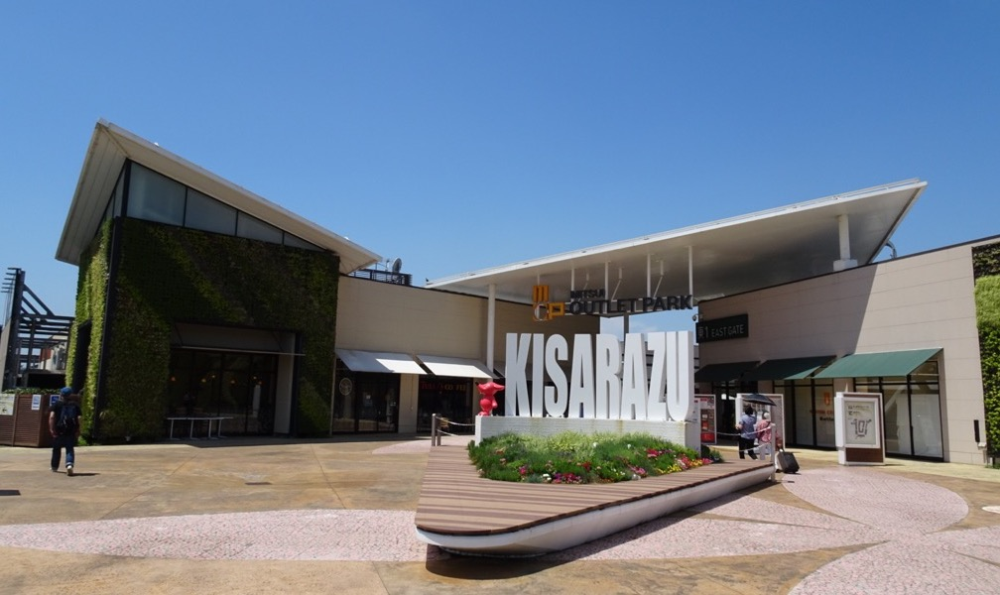
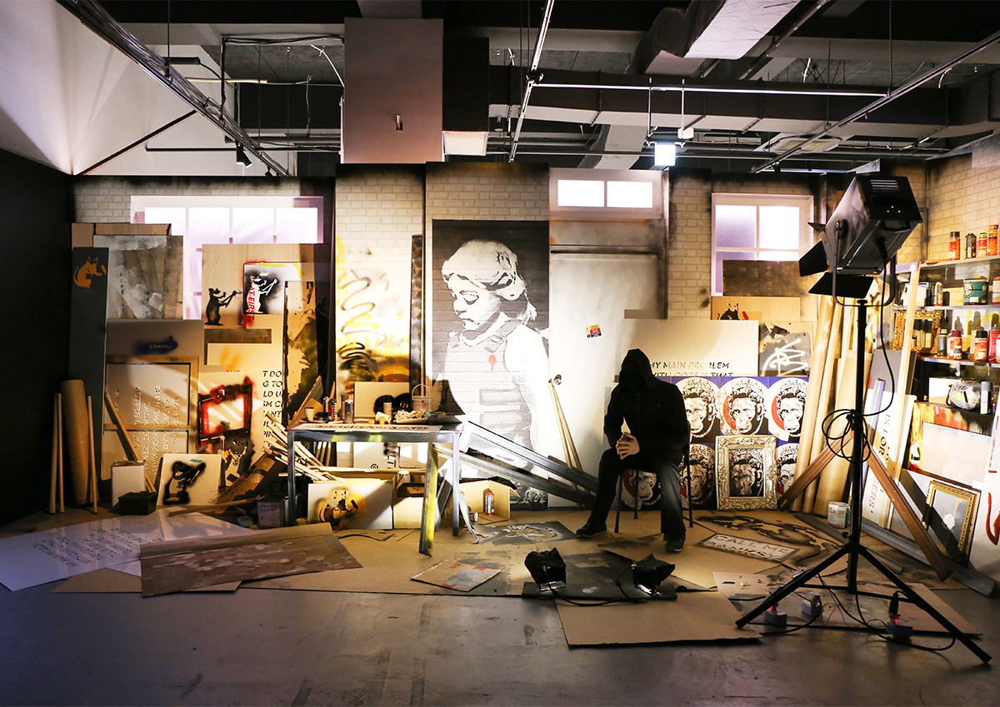

江ノ島でサーフィンをしました
8/232020
カテゴリー：アクティビティ
江の島は神奈川県の湘南海岸に浮かぶ小島で、音楽の神とされる弁財天の像を祀った江島神社で知られています。また、江の島アイランドスパ（えのすぱ）や、19 世紀のイギリス式庭園サムエル コッキング苑、江の島シーキャンドル（展望灯台）もあります。岩屋の手前には潮だまりがあり、洞窟は仏像が安置されています。本土側には人気のビーチがあり、島を一望できます。
震災の復興が進む中、1929年（昭和4年）には小田急江ノ島線が開通し、観光地発展のきっかけを与えた。
東所沢サクラタウンへ行きました
8/222020
カテゴリー：お気に入りの場所
「ところざわサクラタウン」は、みどり豊かな地から最先端の文化と産業を生み出し、世界に向けて発信する「COOL JAPANFOREST 構想」の拠点施設です。
KADOKAWAが建設・運営する書籍製造・物流工場や所沢キャンパス（新オフィス）、イベントスペース、ホテル、ショップ＆レストラン、ダ・ヴィンチストア、商業施設などを展開するほか、角川文化振興財団による文化複合施設も建設。日本最大級のポップカルチャーの発信拠点として、2020年４月に竣工しました。今後は11月6日に予定しているグランドオープンに向けて準備を進めて参ります。
木更津アウトレットパークに行きました
8/122020
カテゴリー：お気に入りの場所
三井アウトレットパーク 木更津は、千葉県の木更津市にある本格アウトレットモールです。国内外の有名メーカー＆ブランド・セレクトショップから選りすぐりのハイクオリティな商品をアウトレット価格で提供いたします。
ホームページにてご案内しておりました営業時間を変更させていただくことになりました。 三井アウトレットパーク 木更津は、9/20(日)・9/21(月・祝)の営業時間を下記の通り変更いたします。
横浜アソビル バンクシー展に行きました
7/122020
カテゴリー：お気に入りの場所
バンクシーは、イギリスを拠点に活動する芸術家。世界中のストリート、壁、橋などを舞台に神出鬼没に活動していることで注目を集めていることは、ご存知の方も多いのではないでしょうか？ アート・ワールドにおいては、社会問題に根ざした批評的な作品を手がけるアーティストとして評価されている他、テーマパーク、宿泊施設、映画の制作など、その活動は多岐にわたっているバンクシー。彼の代表的な活動スタイルであるステンシル（型版）を使用した独特なグラフィティと、それに添えられるエピグラムは、風刺的でダークユーモアに溢れています。
でも、その正体を知る人は誰もいません。